Peralihan global menuju sistem energi bebas emisi karbon menempatkan hidrogen sebagai salah satu vektor energi paling krusial di abad ke-21. Namun, sifat fisis gas hidrogen yang sangat ringan dan mudah meledak menghadirkan rintangan logistik masif: kompresi mekanik bertekanan tinggi (350–700 bar) dan pencairan kriogenik ekstrem (-253 °C) tidak hanya menyerap sebagian besar input energi terbarukan, melainkan juga menuntut infrastruktur tangki khusus yang berisiko tinggi terhadap kerapuhan material logam.
Sebagai solusi kompromi yang sangat menjanjikan, teknologi Liquid Organic Hydrogen Carrier (LOHC) memungkinkan hidrogen disimpan dan ditranspor dalam bentuk cairan organik stabil pada suhu dan tekanan lingkungan normal, memanfaatkan jaringan pipa, truk tangki, dan kapal bahan bakar minyak bumi yang sudah tersedia secara luas. Di antara kandidat LOHC, pasangan siklus metilsikloheksana / toluena (MCH/TOL) menjadi sistem yang paling matang secara industri (contohnya pada demonstrasi skala besar SPERA Hydrogen).
Kendati demikian, siklus MCH menghadapi satu kelemahan termal yang berat: reaksi pelepasan hidrogen (dehidrogenasi) bersifat sangat endotermik, membutuhkan pasokan panas bersuhu tinggi (300–400 °C) di atas katalis platinum. Kebutuhan energi termal yang masif ini menurunkan efisiensi energi siklus secara keseluruhan. Untuk mengatasi kendala ini, tim kimia komputasi dari Isfahan University of Technology (Iran) yang dipimpin oleh Marzie Esmaeili Chermahini, Alireza Najafi Chermahini, dan Mehran Ghiaci melakukan telaah komprehensif menggunakan Density Functional Theory (DFT-D) guna menguji hipotesis fundamental: apakah modifikasi kimiawi pada cincin sikloheksana melalui gugus fungsi pendorong elektron (-NH₂) atau penarik elektron (-NO₂) dapat mempermudah pelepasan hidrogen pada tingkat atomik?

Dalam studi ini, dua senyawa turunan diposisikan berhadapan dengan MCH murni pada posisi karbon C4: 4-metilsikloheksilamina (MCA) yang membawa gugus amino pendorong elektron (-NH₂), serta 1-metil-4-nitrosikloheksana (MNC) yang membawa gugus nitro penarik elektron kuat (-NO₂). Katalis yang dimodelkan adalah klaster sub-nanometer Pt₁₃ simetri D₅ₕ, yang mencerminkan pusat-pusat situs aktif dengan koordinasi rendah (corner and edge sites) pada nanopartikel platinum komersial.
Klaster Sub-Nanometer Pt₁₃ & Perilaku Adsorpsi Awal
Kalkulasi struktur elektronik dijalankan menggunakan modul DMol3 (Materials Studio) dengan fungsional pertukaran-korelasi GGA-PBE yang dipadukan koreksi dispersi van der Waals (metode Tkatchenko-Scheffler / TS DFT-D). Sebelum reaksi dehidrogenasi dapat berlangsung, molekul LOHC harus terlebih dahulu menempel secara stabil pada permukaan klaster Pt₁₃.
Berdasarkan analisis konformasi termodinamika di fase gas, isomer trans untuk kedua turunan terbukti lebih stabil daripada isomer cis: trans-MCA lebih stabil 0.95 kcal/mol dibanding cis-MCA, sementara trans-MNC lebih stabil 0.52 kcal/mol dibanding cis-MNC, disebabkan oleh minimnya repulsi sterik antara gugus metil dan substituen pada posisi ekuatorial cincin kursi (chair conformation).
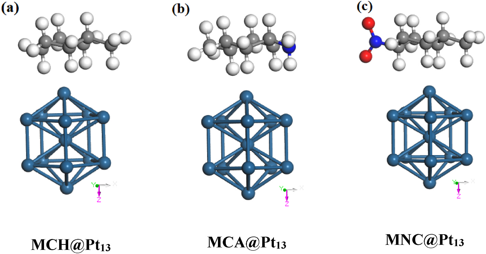
Perhitungan energi adsorpsi (E_ads) menunjukkan hierarki kekuatan interaksi yang sangat tegas:
MCA: -26.67 kcal/mol | MCH: -22.35 kcal/mol | MNC: -21.59 kcal/mol (-20.38 kcal/mol sisi nitro)
Mengapa MCA teradsorpsi paling kuat sedangkan MNC paling lemah? Jawabannya berakar pada efek elektronik murni. Gugus amino (-NH₂) merupakan pendorong elektron kuat melalui pasangan elektron bebas atom nitrogen, yang meningkatkan kerapatan awan elektron pada cincin sikloheksana dan berinteraksi langsung dengan atom permukaan platinum. Sebaliknya, gugus nitro (-NO₂) yang bersifat sangat elektronegatif menyedot kerapatan elektron dari cincin, sehingga interaksi van der Waals dan transfer muatan antara cincin karbon dengan klaster Pt₁₃ menjadi teredam.
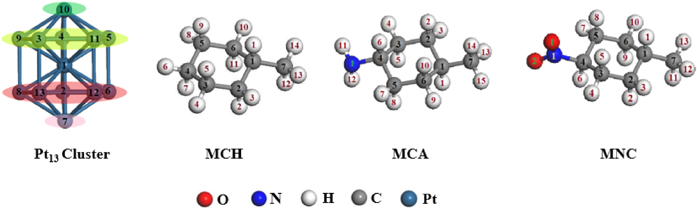
Analisis muatan atomik Mulliken mengonfirmasi mekanisme ini secara kuantitatif: setelah adsorpsi MCA, atom-atom platinum pada klaster menerima muatan negatif tambahan (terjadi transfer elektron dari molekul ke klaster Pt₁₃). Sebaliknya, pada adsorpsi MNC, atom platinum justru kehilangan muatan negatif (menjadi lebih positif), membuktikan terjadinya tarikan balik elektron dari klaster logam menuju gugus nitro. Analisis Densitas Keadaan Terproyeksi (PDOS) mengungkap bahwa puncak orbital-p dari ketiga molekul bergeser ke tingkat energi Fermi yang lebih rendah setelah adsorpsi, disertai pembentukan puncak ikatan lemah antara orbital p molekul dan orbital d klaster pada -3.6 dan -1.8 Hartree.
Tahap 1 & 2: Pemutusan Sepasang Hidrogen Pertama (Pelepasan H₂ ke-1)
Dehidrogenasi sempurna dari metilsikloheksana menuju toluena melibatkan pelepasan total 6 atom hidrogen (3 molekul gas H₂). Reaksi ini dimodelkan sebagai rangkaian 6 tahap elementer berurutan yang terbagi dalam tiga babak pelepasan molekul H₂.
Pemilihan atom hidrogen awal ditentukan berdasarkan perpanjangan ikatan C–H setelah adsorpsi pada klaster serta kedekatan jarak spasial dengan atom Pt permukaan:
- MCH: Pemutusan dimulai dari ikatan C4–H6 (ikatan memanjang menjadi 1.109 Å dengan jarak 2.852 Å ke Pt4). Barrier aktivasi TS1 sebesar 17.94 kcal/mol, melepaskan intermediat D1 dengan sifat eksotermik (melepas 4.44 kcal/mol).
- MCA: Pemutusan dimulai dari C3–H5 (memanjang menjadi 1.111 Å, berjarak 2.831 Å ke Pt4) dengan barrier TS1' sebesar 18.40 kcal/mol, menghasilkan intermediat D1' yang sangat stabil (melepas 7.75 kcal/mol).
- MNC: Pemutusan terjadi pada C4–H6 dengan barrier TS1" sebesar 20.89 kcal/mol, menghasilkan intermediat D1" yang melepas 4.62 kcal/mol.
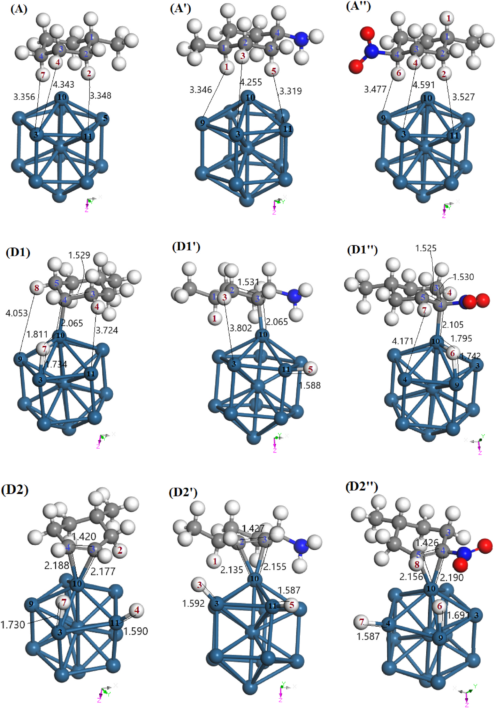
Setelah pembentukan intermediat radikal teradsorpsi (D1), tahap kedua berlanjut dengan melepaskan hidrogen kedua dari karbon tetangga untuk membentuk ikatan rangkap dua karbon-karbon pertama (alkena siklis).
Pada tahap 2 inilah rintangan kinetik utama muncul: untuk MCH, pemutusan ikatan C3–H4 memerlukan energi aktivasi sebesar 28.91 kcal/mol (keadaan transisi TS2). Ini merupakan barrier tertinggi di antara seluruh tahap dehidrogenasi MCH, menjadikan Tahap 2 sebagai Rate-Determining Step (RDS) untuk MCH! Hal serupa terjadi pada MCA, di mana pemutusan C2–H2 melewati TS2' dengan barrier 27.82 kcal/mol (juga berfungsi sebagai RDS untuk MCA).
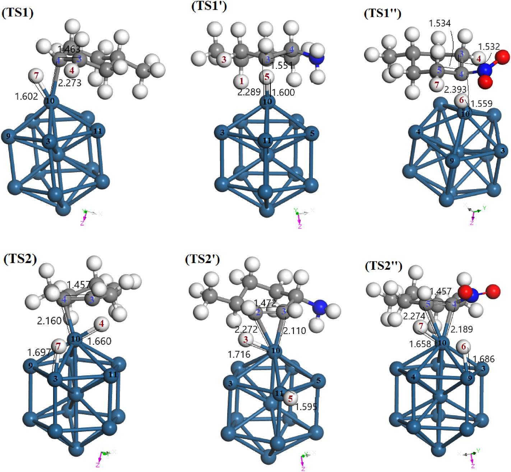
Sebaliknya, pada molekul MNC, pemutusan ikatan C3–H4 pada tahap 2 hanya memerlukan barrier sebesar 26.80 kcal/mol. Kedua atom hidrogen yang kini menempel pada atom Pt berdekatan kemudian berasosiasi dan berdesorpsi ke fase gas sebagai molekul H₂ pertama.
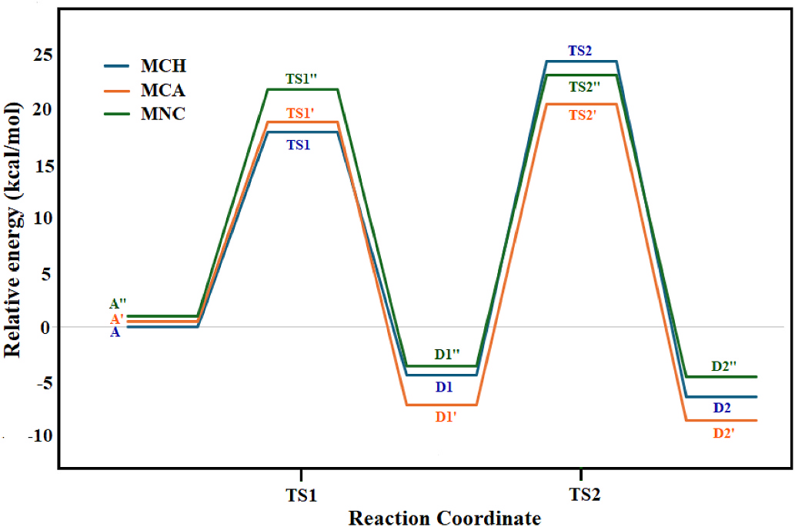
Tahap 3 & 4: Pelepasan H₂ Kedua & Pergeseran RDS pada MNC
Setelah satu ikatan rangkap dua terbentuk, molekul mengalami dehidrogenasi babak kedua menuju pembentukan diena terkonjugasi. Pada fase inilah sebuah anomali kinetika yang sangat menarik terungkap oleh tim peneliti:
Bagi MCH dan MCA, tahap ketiga berlangsung dengan energi aktivasi yang relatif terkendali: masing-masing 24.92 kcal/mol (TS3) dan 21.93 kcal/mol (TS3'). Keduanya mengadopsi konfigurasi adsorpsi terkoordinasi ganda yang stabil pada permukaan klaster platinum.
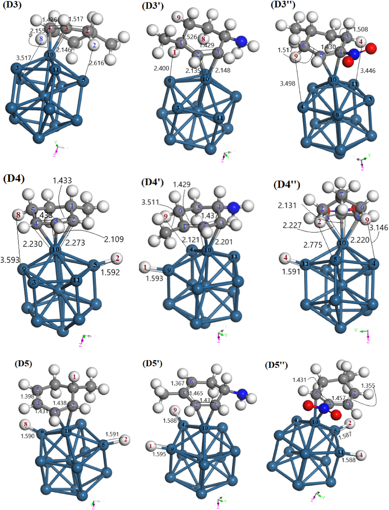
Namun, untuk MNC, tahap 3 justru melonjak menjadi rintangan paling terjal dalam seluruh siklus reaksinya, dengan barrier aktivasi mencapai 28.66 kcal/mol! Mengapa gugus nitro yang semula memperlancar tahap 2 mendadak memicu lonjakan barrier pada tahap 3?
Penjelasan strukturalnya sangat gamblang saat mengamati geometri keadaan transisi TS3" (Gambar 8): akibat pembatasan geometri dari gugus nitro, intermediat terpaksa mengadopsi struktur adsorpsi koordinasi-tunggal eta-1 pada C5 (η1(C5)), yang jauh lebih tidak stabil dibandingkan struktur dua-koordinasi pada MCH dan MCA. Ditambah lagi, posisi atom hidrogen yang harus diputus berada sangat dekat dengan gugus penarik elektron nitro, sehingga ikatan C–H menjadi lebih terikat secara elektronik. Konsekuensinya, Tahap 3 menjadi Rate-Determining Step (RDS) khusus untuk MNC!
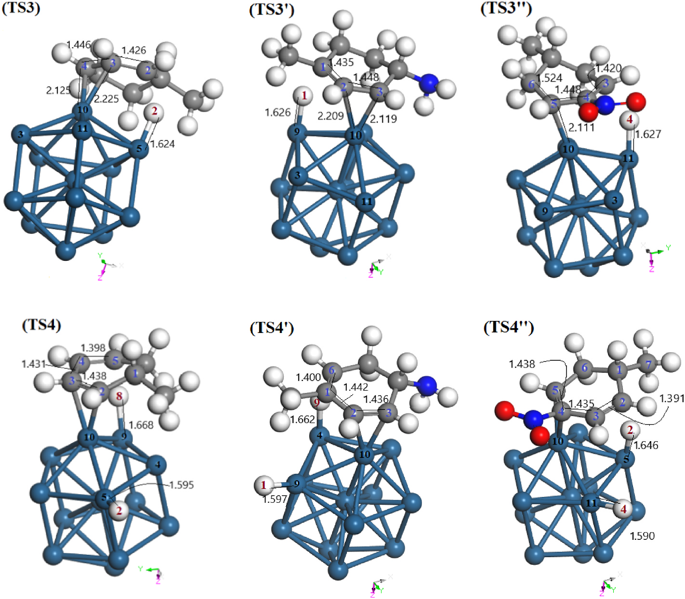
Pada tahap 4, pemutusan hidrogen pasangan diena berlangsung mulus untuk ketiga senyawa, dengan barrier yang seragam rendah: 18.91 kcal/mol (MCH), 19.69 kcal/mol (MCA), dan 17.98 kcal/mol (MNC). Pelepasan molekul H₂ kedua kemudian mengosongkan kembali situs adsorpsi platinum untuk babak akhir reaksi.
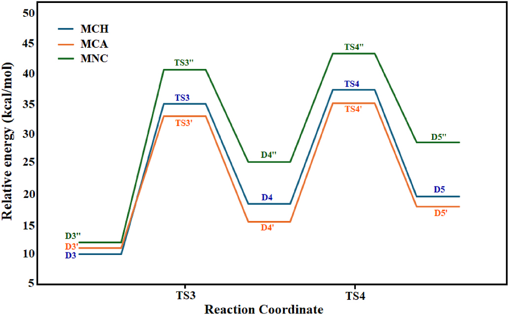
Tahap 5 & 6: Aromatisasi Final Menuju Cincin Benzena
Dua tahap pemutusan terakhir merupakan langkah krusial untuk memulihkan kestabilan resonansi aromatik cincin benzena. Pemutusan H ke-5 pada tahap 5 memerlukan energi aktivasi 19.31 kcal/mol untuk MCH dan 18.52 kcal/mol untuk MCA.
Menariknya, pada MNC, tahap 5 berlangsung jauh lebih mudah dengan barrier hanya 14.55 kcal/mol. Intermediat D8" terbentuk secara eksotermik, didukung oleh interaksi sekunder antara atom oksigen nitro dengan atom permukaan platinum.
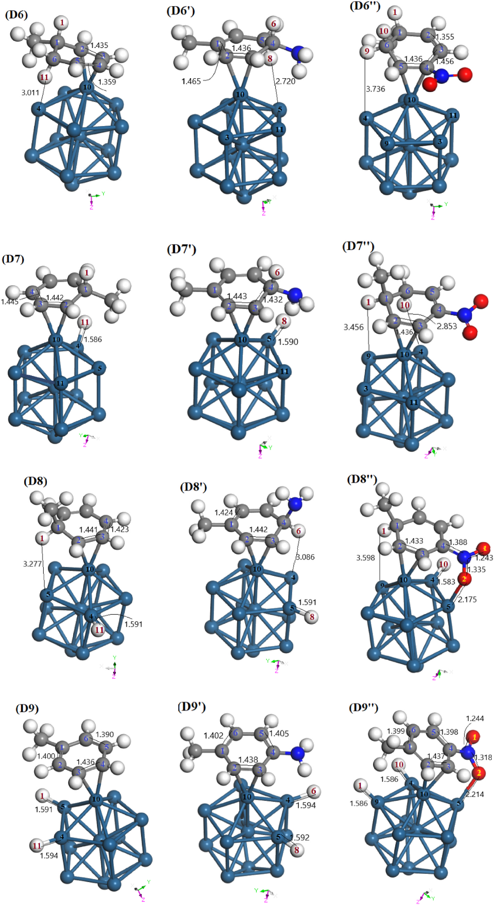
Pada tahap ke-6 (pemutusan hidrogen terakhir), seluruh molekul menuntaskan aromatisasinya:
- MCH: Melalui TS6 dengan barrier 11.25 kcal/mol, melepaskan energi masif sebesar 13.97 kcal/mol (sangat eksotermik) untuk membentuk molekul toluena teradsorpsi (D9).
- MCA: Memerlukan rotasi molekul 180° terhadap klaster Pt₁₃ agar ikatan C4–H6 dapat berhadapan dengan atom Pt4. Melewati TS6' dengan barrier 13.42 kcal/mol, reaksi ini melepaskan energi eksotermik sebesar 23.99 kcal/mol saat membentuk 4-metilanilin (D9').
- MNC: Pemutusan C1–H1 berlangsung dengan barrier teramat rendah, hanya 8.70 kcal/mol (TS6") dan melepaskan energi 10.40 kcal/mol untuk menghasilkan 1-metil-4-nitrobenzena (D9").
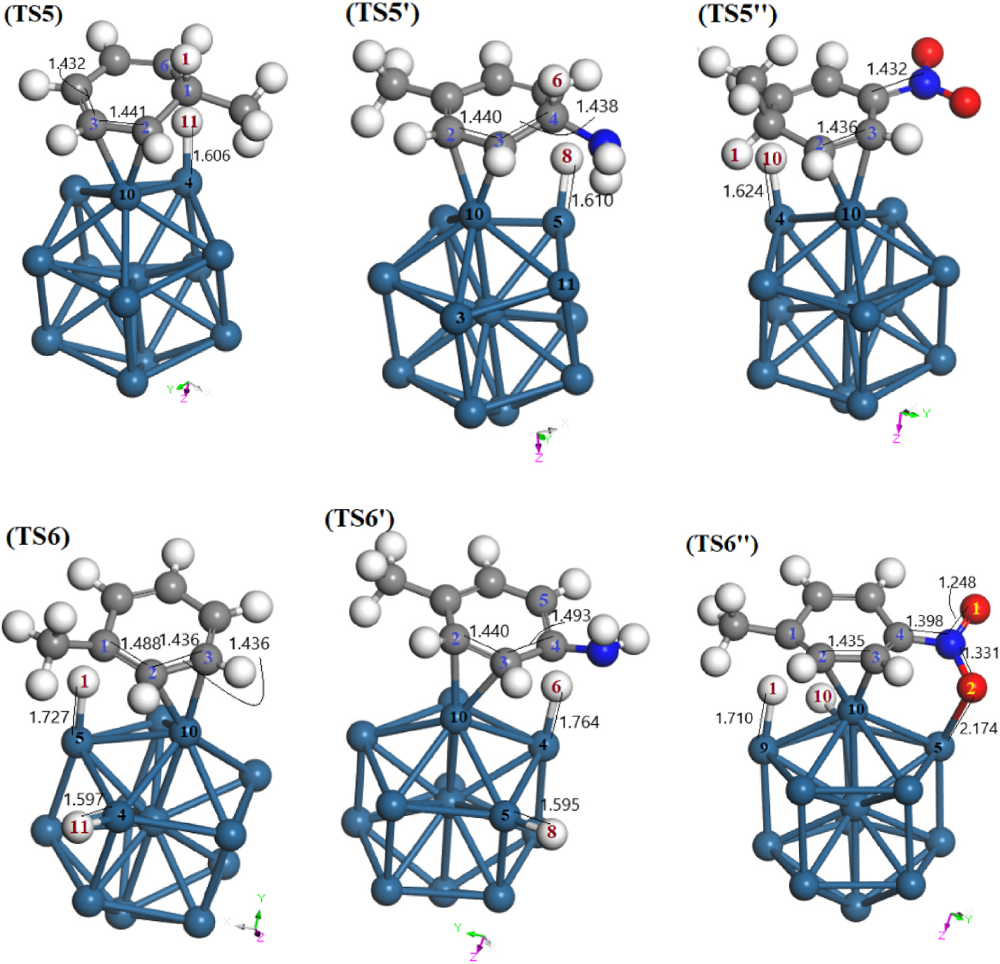
Rendahnya barrier pada TS6" disebabkan oleh stabilisasi koordinasi ganda: selain koordinasi cincin karbon η1(C2)–η1(C3) dengan Pt10, atom oksigen O2 dari gugus nitro membentuk ikatan koordinasi langsung dengan Pt5 sepanjang 2.214 Å. Interaksi pengikat tambahan ini mengunci keadaan transisi pada tingkat energi potensial yang sangat rendah.
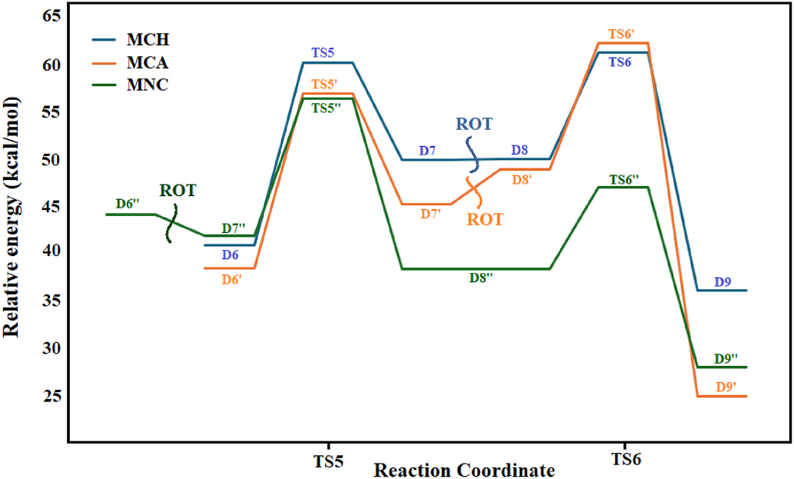
Kinetika, Termodinamika & Dilema Rekayasa LOHC
Untuk memahami gambaran utuh dari efek substituen terhadap kereaktifan LOHC, data kinetika enam tahap dan parameter termodinamika global dirangkum dalam tabel publikasi berikut:
| Molekul | E_a Tahap 1 | E_a Tahap 2 | E_a Tahap 3 | E_a Tahap 4 | E_a Tahap 5 | E_a Tahap 6 | Tahap Kunci (RDS) | E_a Global |
|---|---|---|---|---|---|---|---|---|
| MCH (Tanpa Substituen) | 17.94 | 28.91 | 24.92 | 18.91 | 19.31 | 11.25 | Tahap 2 | 61.28 kcal/mol |
| MCA (-NH₂ Pendorong) | 18.40 | 27.82 | 21.93 | 19.69 | 18.52 | 13.42 | Tahap 2 | 62.31 kcal/mol |
| MNC (-NO₂ Penarik) | 20.89 | 26.80 | 28.66 | 17.98 | 14.55 | 8.70 | Tahap 3 | 56.37 kcal/mol |
*Seluruh nilai energi aktivasi dalam satuan kcal/mol. E_a Global dihitung sebagai selisih antara keadaan transisi paling tidak stabil terhadap energi reaktan mula-mula.
Secara kinetika, gugus penarik elektron nitro (-NO₂) pada MNC memberikan keuntungan laju reaksi paling tinggi dengan energi aktivasi global terendah (56.37 kcal/mol), lebih cepat dibandingkan MCH (61.28 kcal/mol) dan MCA (62.31 kcal/mol). Gugus amino pada MCA sedikit menaikkan barrier global akibat rintangan sterik dan kebutuhan rotasi 180° pada tahap akhir.
Analisis Termodinamika: Penghematan Energi Masif
Dampak paling dramatis dari rekayasa substituen terlihat pada parameter termodinamika reaksi dehidrogenasi sempurna pada 298 K (25 °C):
| Senyawa | Bentuk Kaya H₂ | Bentuk Bebas H₂ | Kapasitas H₂ | ΔH (kcal/mol) | ΔG (kcal/mol) | ΔS (cal/mol·K) | E_ads Produk |
|---|---|---|---|---|---|---|---|
| MCH | Metilsikloheksana | Toluena (TOL) | 6.12 wt% | 63.04 | 37.86 | 84.5 | -35.12 kcal/mol |
| MCA | 4-Metilsikloheksilamina | 4-Metilanilin (MAN) | 5.31 wt% | 52.42 | 26.48 | 87.0 | -43.12 kcal/mol |
| MNC | 1-Metil-4-nitrosikloheksana | 1-Metil-4-nitrobenzena (MNB) | 4.20 wt% | 53.93 | 27.66 | 88.1 | -43.61 kcal/mol |
Perhatikan penurunan nilai energi bebas Gibbs (ΔG): dari 37.86 kcal/mol pada MCH murni anjlok menjadi hanya 26.48 kcal/mol pada MCA dan 27.66 kcal/mol pada MNC! Penurunan beban energi bebas sebesar ~10–11 kcal/mol ini merupakan penghematan termodinamika yang luar biasa signifikan. Nilai entalpi reaksi endotermik (ΔH) juga terpangkas lebih dari 10 kcal/mol (dari 63.04 menjadi 52.42 kcal/mol). Hal ini mengindikasikan bahwa secara teori, turunan tersubstitusi membutuhkan suhu operasi reaktor yang jauh lebih rendah daripada 350 °C untuk memulai dehidrogenasi.
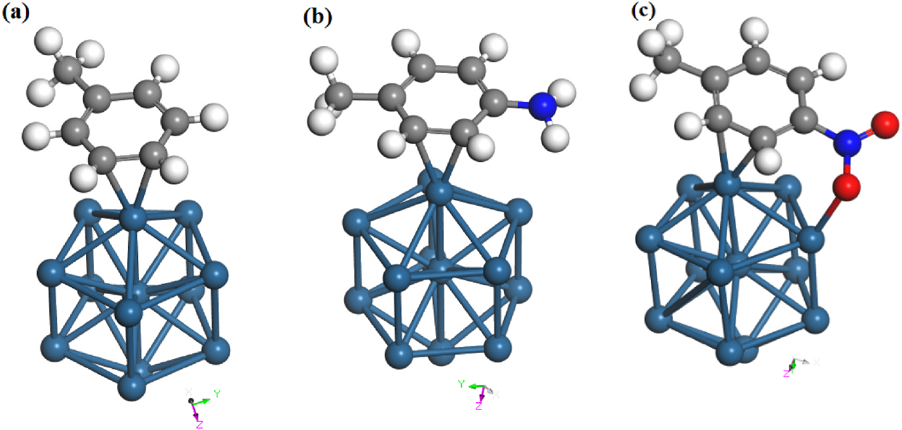
Dilema Rekayasa Katalisis: Desorpsi Produk vs Kapasitas Gravimetrik
Kendati modifikasi gugus fungsi memberikan dorongan termodinamika dan kinetika yang menggiurkan, para peneliti menyoroti dua trade-off rekayasa yang sangat krusial:
- Risiko Keracunan Permukaan Katalis (Product Inhibition): Sebagaimana ditunjukkan pada Gambar 13, energi adsorpsi produk aromatik terdehidrogenasi adalah -35.12 kcal/mol untuk Toluena (TOL), namun melonjak sangat kuat menjadi -43.12 kcal/mol untuk MAN dan -43.61 kcal/mol untuk MNB. Ikatan yang terlalu kokoh antara produk aromatik tersubstitusi dengan klaster Pt₁₃ menyebabkan produk sulit lepas (desorpsi terhambat), sehingga berpotensi meracuni situs aktif platinum, memblokir siklus katalitik berikutnya, atau memicu pembentukan kokas (coking) pada operasi kontinu.
- Penalti Kapasitas Gravimetrik Hidrogen: Penambahan gugus fungsi meningkatkan bobot molekul (MW) dari cairan pembawa: MCH memiliki kapasitas gravimetrik simpan 6.12 wt% (memenuhi ambang batas target praktis US DOE). Namun, kehadiran gugus -NH₂ menurunkan kapasitas menjadi 5.31 wt%, dan gugus -NO₂ yang berat memangkas kapasitas hingga tersisa hanya 4.20 wt%.
Substitusi gugus fungsi terbukti secara mekanistik mampu menurunkan hambatan termal dehidrogenasi LOHC pada klaster Pt₁₃. Namun, penerapan praktisnya menuntut perancangan katalis bimetalik atau paduan nano (misalnya Pt-Sn atau Pt-Ni pada pendukung oksida basa) yang secara spesifik dirancang untuk melemahkan adsorpsi produk aromatik polar, sehingga manfaat penghematan energi termal 11 kcal/mol dapat dipetik tanpa mengorbankan masa pakai katalis.
- Judul: Substituent effect on the reactivity of liquid organic hydrogen carriers: A DFT study on methylcyclohexane dehydrogenation over Pt13 cluster
- Penulis: Marzie Esmaeili Chermahini, Alireza Najafi Chermahini*, Mehran Ghiaci
- Afiliasi: Department of Chemistry, Isfahan University of Technology, Iran
- Jurnal: International Journal of Hydrogen Energy, Vol. 193 (2025) 152387
- Penerbit: Elsevier Ltd.
- DOI: 10.1016/j.ijhydene.2025.152387
- Perangkat Lunak: DMol3 Module (Materials Studio)
- Fungsional DFT: GGA-PBE dengan Koreksi Dispersi TS (DFT-D)
- Model Katalis: Klaster Sub-Nanometer Pt₁₃ (Simetri D₅ₕ)
- Pencarian Keadaan Transisi: Complete LST/QST & Analisis Frekuensi Hessian (1 Frekuensi Imajiner)
- Termodinamika: Evaluasi ΔH, ΔG, ΔS pada 298.15 K (25 °C)